トリオ/ケンウッド カタログギャラリー
�@1970年頃の総合カタログ
ヘッドフォンの型番が「KH」の前の「HS」型番の時代のカタログ。
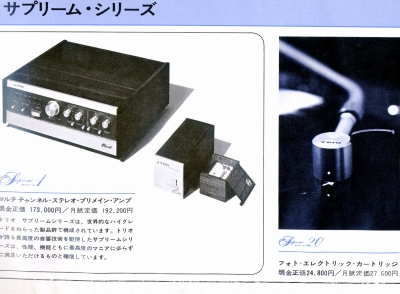
（まだサプリーム・シリーズが現役だった。現金定価と月賦定価が併記されている。）
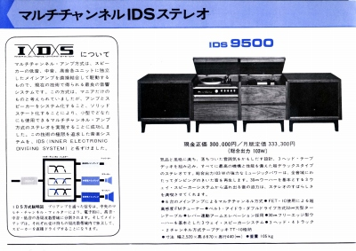
（3点セパレートステレオにマルチアンプを採用していた時代。上記のIDS9500はオープンリールを加えて4点セパレートステレオ）
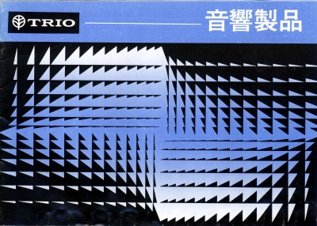
�A1970年代初頭ヘッドフォンカタログ
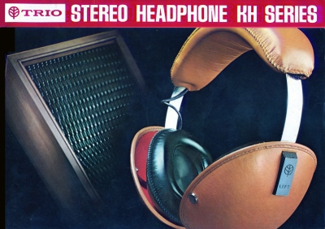
�B1975.4月ヘッドフォンカタログ
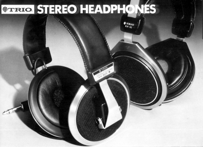
�C1977.5月ヘッドフォンカタログ
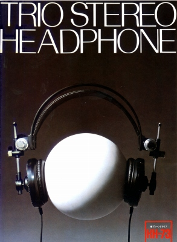
�D1978.12月アクセサリーカタログ
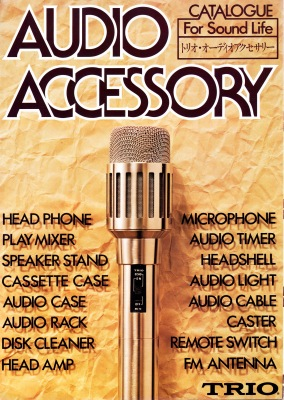
�E1979.12月総合カタログ
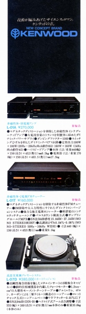
（この頃はまだ「ケンウッド」はごく一部の製品にしか使われていない）
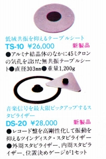
（CD導入前夜、アナログディスク円熟期のターンテーブル関連アクセサリー）
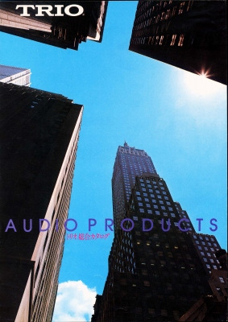
�F1980.4月総合カタログ
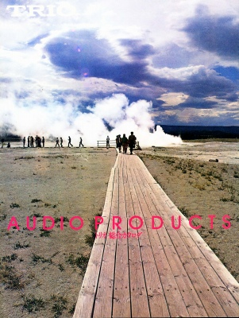
�G1980.11月総合カタログ
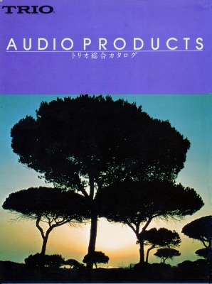
�H1984.10月総合カタログ
トリオブランド消滅前夜のカタログ。製品の大半は「ケンウッド」ブランドだがヘッドフォンは「トリオ」ブランドだった。
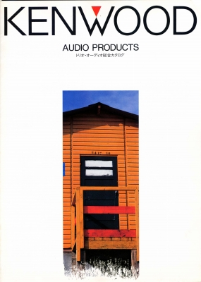
�I1985.12月総合カタログ
トリオブランド消滅後のカタログ。まだ社名変更（1986年に実施）まではすんでいない。
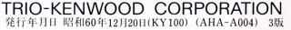
�J1990.12月総合カタログ
扱い品目が増えすぎて、もはやヘッドフォンの資料としてはほとんど使えない状態。
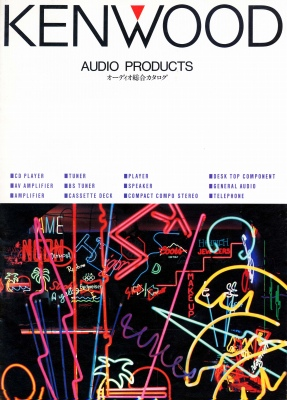
�K1999.11月総合カタログ
このころは単品のオーディオ自体が縮小傾向にあった時期でミニコンポ由来の「K's」シリーズがメイン。
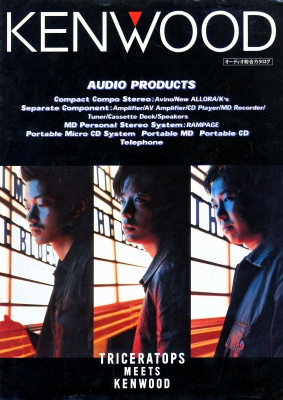
ケンウッドのインデックスへ